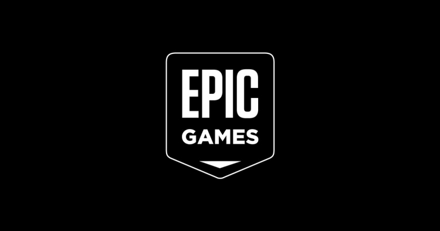
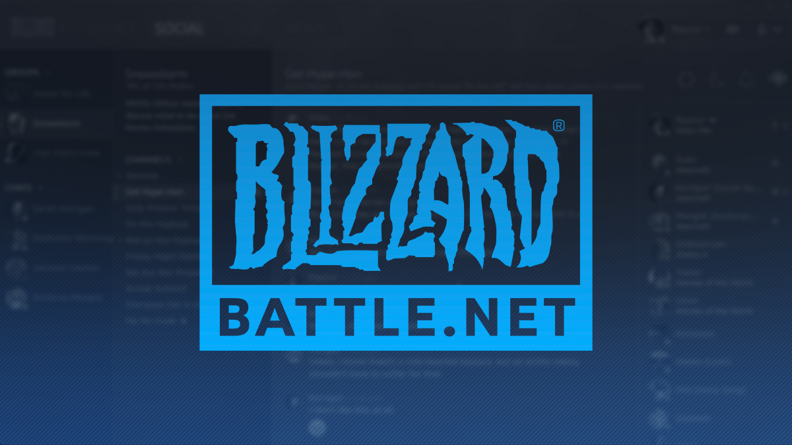

Основна послуга Steam — це продаж відеоігор, завантаження яких вимагає спеціального додатка на комп'ютері, Steam-клієнта. Крім того сервіс поширює програми для створення відеоігор і пов'язаних робіт (обробка фото, відео, звуку), обладнання, відео, а також новини відеоігрової індустрії та самого Steam.
Steam виступає в ролі технічного засобу захисту авторських прав (DRM). Оскільки він дозволяє завантажувати ігри безпосередньо з серверів Valve, усувається необхідність у видавцеві — проміжній ланці між розробником і споживачем. Розробник отримує можливість оперативніше реагувати на потреби ігрового співтовариства (наприклад, шляхом випуску безкоштовних доповнень на зразок Half-Life 2: Lost Coast) і здійснювати повний контроль над розповсюдженням самих ігор, оскільки навіть коробкові версії Steam-ігор вимагають обов'язкової активації через Інтернет.

Epic Games (також відома як Epic, колишня Epic Megagames) — американська компанія, що займається розробкою відеоігор. Штаб-квартира розташована в місті Кері, штат Північна Кароліна. Компанія відома за ігровими серіями Gears of War , Fortnite і Unreal Tournament, а також як творці ігрового рушія Unreal Engine. До складу Epic Games входять такі дочірні компанії, як Chair Entertainment, People Can Fly і Titan Studios. Компанія має студії в Шанхаї, Кореї і Токіо. Ключові фігури в Epic Games — провідний програміст Тім Свіні, геймдизайнер Кліфф Блежинськи, Ерік де Нев і Стів Полдж.

Origin платформа цифровой дистрибуции компании Electronic Arts, которая даёт возможность пользователям приобретать компьютерные игры через Интернет и загружать их с помощью клиента Origin (ранее EA Download Manager, EA Downloader и EA Link).3 июня 2011 EA Store был переименован в Origin.В 2011 году компания Electronic Arts заявила, что хотела бы, чтобы Origin соответствовал их главному конкуренту, сервису Steam, путём добавления облачных сохранений, автообновления игр, достижений и кроссплатформенных релизов.В Origin используются социальные функции, такие как управление профилем, общение с друзьями в чате и во время игры с помощью внутриигрового приложения, интеграция с Facebook, Xbox Live и PlayStation Network.На данный момент имеется возможность автообновления игр, синхронизация сохранений игр в облачном хранилище, общение во встроенном чате. К 2013 году, в Origin было зарегистрировано более 50 миллионов пользователей.

Battle.net программа предназначена для запуска игр от Blizzard Entertainment.Программа дает возможность играть в такие популярные игры, как World of Warcraft, Starcraft, Diablo, Hearthstone и тому подобное.Battle.net позволяет общаться в чате, устанавливать сетевой статус, осуществлять поиск пользователей и добавлять в список друзей.Программа содержит встроенный магазин, позволяющий покупать игры и загружать различные дополнения к ним.Также Battle.net сообщает о доступной версии игры и содержит инструменты для автоматического обновления.